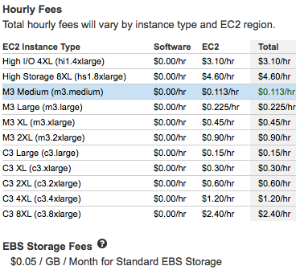

Information for Developer, Operations, and Security
pre-release
| OS | CentOS 6.4 64bit from ComodIT |
| Web Server | Apache (version) |
| AMI | ami-bb9c9ad2 |
| Zone | us-east-1 |
| Location | Northern Virginia |
| Instance | ec2 m3.medium |
| Account | GitMachines |
| Other | Delete storage on terminate |
This server can be seen by anyone on the Internet. Customizing the server requires logging in with a password.
This evaluation server running in the cloud is free to try for six hours.
Costs as configured.

This server is configured according to NIST Guidelines for locking down a server.
From a technical and operational perspective, GovReady is a measurement of certification-worthiness of an IT system. Because certification and accreditation is ultimately context and organization specific, GovReady focuses on transparency of implemented controls and strives to provide baseline configurations that are 85% to 95% complete against the appropriate FISMA guidance.
GovReady is a tool for sharing what still needs to be done for a system to be approved by a certifying authority.
GovReady also means packaging the information in formats conforming to government certification paperwork.